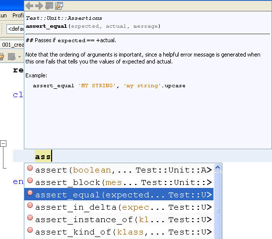
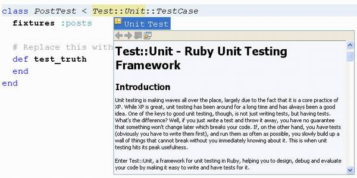
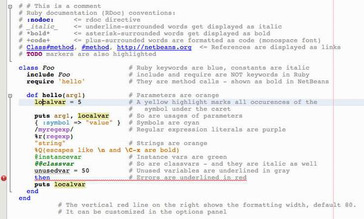
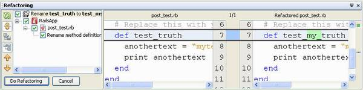
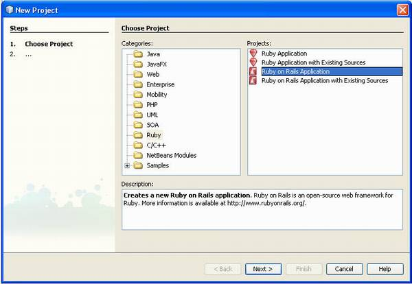
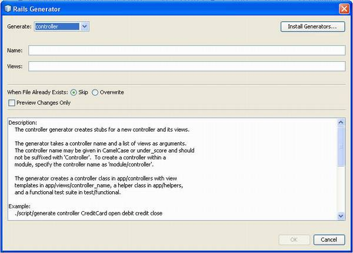
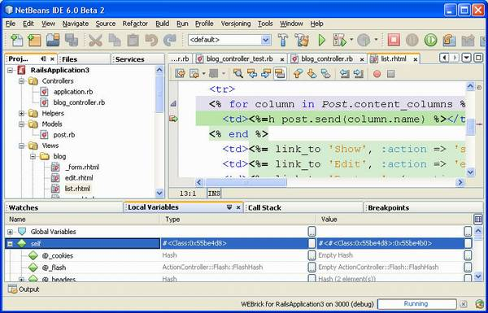

NetBeans has always supported the latest Java standards, and the developer community around the tool and Platform consists largely of Java developers. But as time progresses, a growing number of developers are realizing the advantages of using more than just one language. In some domains, this is actually a must – for example if you want to talk directly to the underlying hardware. NetBeans takes care of that with its C/C++ support.
In some other domains, using a different language is not essential but can bring advantages, such as faster development and quicker turnaround, or better adaptation to requirement changes. There are various scripting languages that have been popular in the web development space for years, like PHP and Perl. Developers who use these love their speed of development and ease of deployment. However, building larger and maintainable web applications with such languages has always been a challenge. You can get things done fast as a single developer, but it’s harder to work in a team or take over someone else’s code. Indeed, most developers will agree that Java is better for building large-scale, well-designed and maintainable web applications.
Java SE 6 brought interesting changes in this area. From that release on, as you know, scripting languages are officially supported on top of the Java platform. JDK 6 already bundles the Rhino scripting engine for JavaScript, and the JVM is opening up to a variety of other scripting languages. Times are especially exciting for open-minded Java developers, who now have the possibility to mix and match a variety of languages, and can count on tooling support that’s quickly improving.
For example, you can use Groovy, a very dynamic language that compiles to Java bytecode; or choose Ruby and run it on top of the JVM thanks to the JRuby runtime. The trend continues with the Java SE 7, which will bring further improvements, like a new invokedynamic bytecode (JSR-292) for increasing the performance of dynamic languages compiled into Java bytecode.
These changes in the platform create many new possibilities. You can benefit from the large amount of Java libraries and the JVM itself, while using a dynamic approach to developing web applications. Frameworks such as Ruby on Rails or Grails (Groovy’s equivalent to RoR) greatly simplify web development by using a large number of defaults (“convention over configuration”). They also provide powerful code generators, scaffolding, and more. So you can, for example, use Java for the back-end code (where Java really shines) and use a dynamic language for the web front end.
Unlike some of the older dynamic languages, Ruby and Groovy are both very cleanly designed, with object orientation in mind since their birth. And I would argue that they are more suitable for larger applications and for team development, too. Add this to the possibility to use Java APIs easily, and they become very compelling to Java developers. Note that these scripting languages are interesting not only in the web space, where they get most of the interest, but can also be used to script Swing GUIs or glue different applications together.
NetBeans and language support
Java developers spend most of their time in their IDEs and many can’t do without the comfort these tools provide. When Java developers want to try a new language or framework, the first thing they will probably do is search for a plugin for their favorite IDE, to simplify the learning process and get productivity from the start. So it’s important for NetBeans to support new scripting languages, especially as they become more popular among Java developers.
When discussing language support in NetBeans it’s worth talking about Schliemann. This project (new in NetBeans 6.0) allows you to define a programming language and integrate it with the IDE. You can define what parts of the language should be displayed in the navigator and how to indent, fold and highlight code, plus many other features. (You can learn more about the framework in the two articles by Geertjan in this and the previous issues of NetBeans Magazine.)
I realize that not everyone is interested in writing language support into NetBeans, so let’s look at which languages are currently supported. NetBeans 6.0 provides first-class support for Ruby and the Ruby on Rails (RoR) framework. JavaScript is also supported, with features such as syntax highlighting and code completion. In addition, there’s work being done on a PHP plug-in; its first beta version will be published together with the NetBeans 6.0 release.
Work is being done on plug-ins for Groovy, Velocity Template Language, Scala, and several other languages. And more projects are probably being started as you read this text. You can search the plug-in manager and plug-in portal for your favorite language, and if it’s not supported, don’t forget that NetBeans is an open-source project, and that contributing by writing support for a new language can be an ideal way to give back to the community!
Ruby on Rails – What is the Buzz About?
Ruby was started by Japanese developer Yukihiro “Matz” Matsumoto in 1993, and had its first release in 1995. The language’s creator has said that Ruby is designed for programmer productivity and fun, following the principles of good user interface design. But Ruby has not really become widely popular until another guy – David Heinemeier Hansson, “DHH” – created an MVC framework called Rails, which is focused on ease of development.
Rails provides features such as scaffolding, object-relational mapping and code generation. Many other frameworks provide such features as well, but Ruby on Rails is quite unique in making common development tasks as easy to do as possible, and thus making developers more productive. With strong emphasis on configuration by exception, as well as powerful code generators and clean APIs, it can indeed help developers with most mundane tasks. But Rails wouldn’t be as good if there was no Ruby behind it. Many lines of code can be saved thanks to Ruby’s dynamical nature – generating code on the fly is a commonly used technique in RoR, for example to handle object-relational mapping. Almost every Java framework requires some code duplication, which RoR avoids by letting you configure application parameters
in a single place.
Editing Ruby code in NetBeans
One of the most important features in any IDE is code completion, of course. If you write Java code, you probably can’t imagine your life without it. Implementing code completion for Ruby is harder than it may seem, however. The reason is that there are no static types in the Ruby language, so the IDE needs to “guess” them, unlike in Java where types are always known.
NetBeans uses sophisticated heuristics to offer the best options in the code completion window (see Figure 1). Code completion helps not only by showing possible methods, classes or modules, but also by providing access to documentation, which is extremely useful if you are learning the language and it’s APIs (see Figure 2).

Figure 1. Code completion in a Ruby test case

Figure 2. Viewing documentation while editing in a Ruby class
{kind=link}
Like in Java code, you can see all occurrences of a variable by moving your cursor over it. You can also change these occurrences easily by pressing Ctrl+R (a feature called Instant Rename); Figure 3 shows an example. As you can notice, many of the features of the new Java editor in NetBeans 6.0 are also available for Ruby editing. Syntax highlighting is also very advanced for Ruby, as Figure 4 shows.


Figure 3. Instant renaming

Figure 4. Ruby syntax highlighting
{kind=link}
You can use many other features Java developers are accustomed to, such as hyperlinking (Go to Declaration), code folding, a navigator, code templates, etc. But what will surprise even the biggest skeptics is the possibility to refactor Ruby code (see Figure 5). You can search for usages and use the Rename refactoring, and other refactorings are currently in the works.

Figure 5. Comparing results before refactoring
{kind=link}
Ruby on Rails Support
NetBeans 6.0 includes first-class support for Ruby on Rails through special project templates, as you can see in Figure 6. Traditionally Rails development was done from the command line:developers launched different commands – called generators – which created different folders and files. NetBeans integrates all the Rails generators into different wizards, so you don’t have to go outside the IDE to execute them (though you can still do that if you prefer). See one of these wizards in action in Figure 7.

Figure 6. Selecting Ruby and Rails projects in the New Project wizard
{kind=link}

Figure 7. Wizard-based Rails code generation
{kind=link}
Once you’re done with development of the Rails application, you can simply hit the Run button: the Webrick server starts up and your web application opens in a web browser. (Webrick is a simple Ruby library that provides web server services.) The turnaround speed is pretty fast with Ruby, since the build and deploy steps are omitted. You can do any updates in the IDE and just refresh the web browser to see the changes in the application.
The Webrick server is intended mostly for development (it’s written in Ruby), however it’s easy to switch, for example, to Mongrel, a production-quality server that can be used to host the final web application.
Debugging
The debugging experience in Ruby is very similar to that using the Java debugger. You can set breakpoints, browse the call stack, add watches, evaluate expressions, and more. When running the code in the debugger you can step into, step out, step over… So if you’ve used a graphical debugger before, you’ll know how to use the Ruby debugger. You can also debug RHTML files (RHTML is a dynamic page system much like JSP 1.0), as seen in Figure 8.

Figure 8. RHTML debugging
{kind=link}
Unit testing
Unit testing support is very well integrated too. For instance, when you create a new model, a unit test is automatically generated for you. This is a feature of Ruby on Rails; its philosophy is that testing is so important that it should not be omitted.
You can also run tests right from the editor and navigate to test classes. If you are really into testing, you can install the “ZenTest” Ruby Gem (use Tools|Ruby Gems). This adds an AutoTest item to your project’s context menu. When invoked, it will launch AutoTest on your project, which will run unit tests automatically whenever you modify a file. In many cases, AutoTest can figure out which unit tests need to be run – this is especially true for Rails projects. If not, it will run all unit tests.
Ruby hints
Ruby hints (also known as quick fixes) are indicated as light bulbs at the side of the editor window and help you resolve issues with your code. They can show that some code might have unintentional side effects, or tell you that a deprecated API is being used. Another Ruby hint helps you reformat a long line of code into multiple lines.
Many additional hints are in development, being available through the plug-in manager. Their development was started after feature freeze so they couldn’t be part of the official release. They are very worth a look and will make your Ruby development even more comfortable.
JRuby or native Ruby?
NetBeans comes with the JRuby runtime, which is used by default for all Ruby-related tasks. JRuby, an implementation of Ruby written in Java, can both interpret Ruby sources and compile them into Java bytecode that will run efficiently on a JVM. You can easily switch to the native Ruby interpreter if you prefer to use it (e.g. for performance reasons). Just change the Ruby binary in Tools|Options>Ruby to your native Ruby interpreter.
The biggest advantage of using JRuby instead of “pure” Ruby is that you can easily invoke Java code from Ruby programs. This gives access to a large amount of Java libraries allowing you to leverage your existing Java infrastructure.
NetBeans goes even further in its Ruby support. It fully supports two full Ruby stacks. The first choice, the standard toolchain used by traditional Ruby and RoR programming, includes other items like the gems package manager (accessible through a wizard in NetBeans), the Webrick and Mongrel web servers, and the Rake build manager.
In the second alternative, a Java platform-oriented stack, the JRuby runtime is complemented by JDBC support (a boon because JDBC drivers are superior and available for many more products than Ruby’s own database drivers). There’s also support for deployment in Java EE servers like GlassFish V2.
Additional features and plug-ins
There are many other features available which were not discussed in this article. You can create your own live templates to speed up coding and there is a spell checker for RubyDoc available from the plugin manager. Also, as Ruby developers are very editor-centric, we provide a set of different plug-ins focused on a variety of editing tasks, such as rectangular selection, highlighting of trailing spaces and tabs, quick file choosing, etc. You can find out more about additional plug-ins at wiki.netbeans.org/wiki/view/RubyPlugins.
Conclusions
This article introduced various features for Ruby development available in NetBeans 6. Many Ruby developers are very excited about this new functionality. Indeed, you’ll find quite a few blog entries from developers saying they’ve switched to NetBeans just because of its Ruby support.
I believe this is just the beginning of the “dynamic language journey” for NetBeans. Large parts of the code in the Ruby feature set are language independent, thus in future NetBeans releases we can expect better tooling for Groovy, PHP, Python and other popular languages. NetBeans is on its way to becoming a very useful tool for more and more developers, regardless of which programming language they choose.